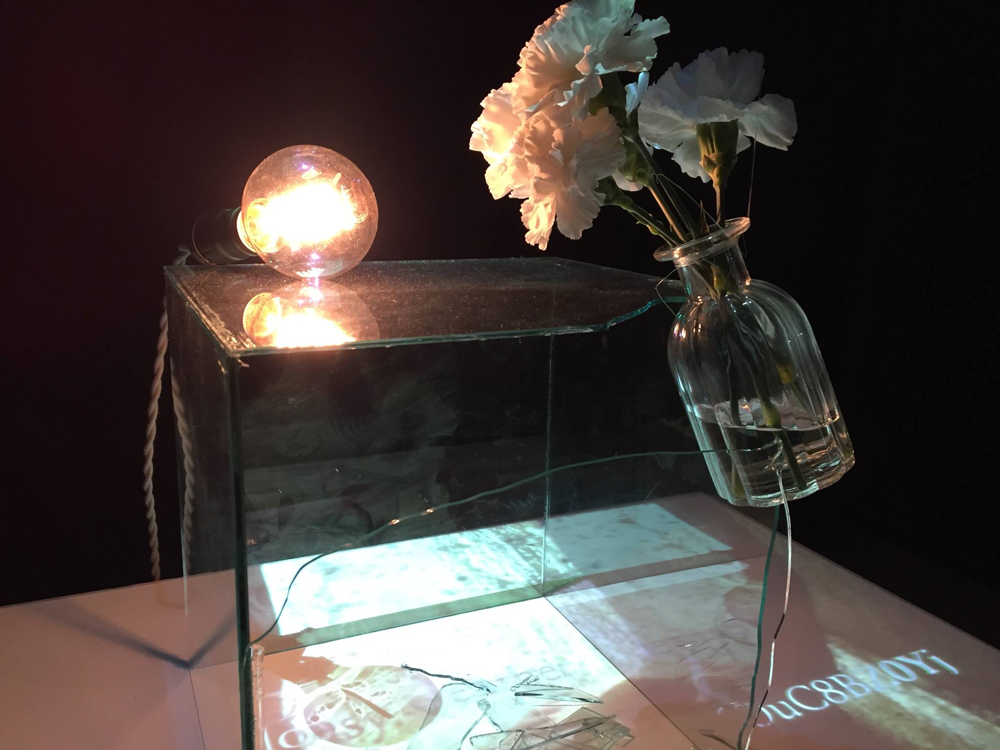
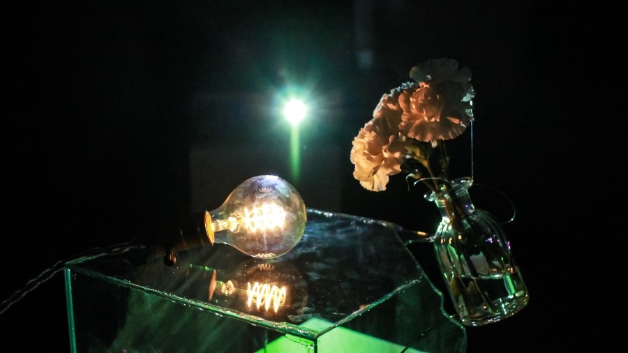
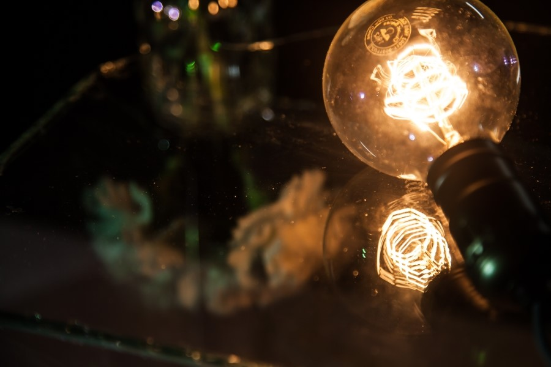

Third Person Reverie
2016
With Jaewon Choi






현대 사회는 개인을 착취한다. 피곤한 몸을 이끌고 밤에 잠이 들면 다시 아침의 알람을 들으며 단말마와 같은 탄식을 뱉는다. 현대 사회는 또한, 매일 많은 돈, 높은 지위를 향해 나아가야 한다는 목표를 강요한다. 그런데도 우리가 삶을 살아가는 것은, 반대로 우리에게 희망을 주는, 각자의 고유한 이상적 가치들을 품고 있기 때문이 아닐까.
홀연히 직장을 관두고 세계여행을 떠나는 것. 요트를 사서 여기저기 떠돌며 바다 위에서 사는 것. 길거리에서 공연을 하며 사람들과 함께 숨 쉬는 것. 이러한 일탈에 대한 환상들은 각각 ‘자유’, ‘낭만’, ‘소통’ 등의 이상적 가치가 억압적인 현실을 부수고 나아가는 모습의 발현이다. 우리는 이러한 현실과 이상 사이의 구도를 3인칭의 시점에서 바라보는 작품을 만들고 싶었다.
이 작품의 제목인 Third Person Reverie는 ‘3인칭의 몽상’이라는 의미이다. 그 말처럼, 이 작품은 환상의 갈등 구도에서 한 발짝 떨어져 이상이 현실을 깨버리는 순간을 감상자의 시야 안에 담는다. 투사되는 영상은 사회가 감상자에게 강요하는 속세적 가치를, 유리는 현실과 이상을 가로막는 억압의 힘을, 이들을 향해 던져진 꽃은 감상자의 이상을 상징한다. 거기서 더 나아가, 작품과 감상자 간의 인터랙션을 통해 감상자를 억압하는 현실의 존재를 작품 안으로 끌어들여, 감상자 본인이 작품의 경험 안으로 한 발짝 더 들어올 방법을 제시한다.